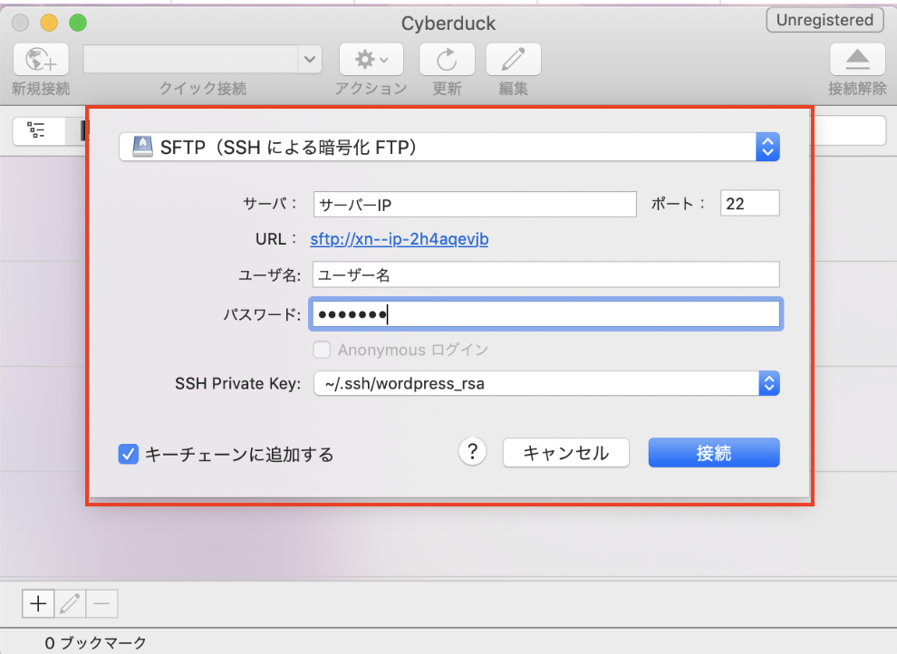

About SSH Login And How To Connect To Cyberduck
关于SSH登陆以及如何连接Cyberduck
什么是SSH
SSH（Secure Shell）是一种网络协议，用于计算机之间的加密登录。如果一个用户从本地计算机，使用SSH协议登录另一台远程计算机，我们就可以认为，这种登录是安全的，即使被中途截获，密码也不会泄露。
什么是FTP
FTP（File Transfer Protocol）就是就是专门用来传输文件的协议。
FTP服务器（File Transfer Protocol Server）是在互联网上提供文件存储和访问服务的计算机，它们依照FTP协议提供服务。
什么是SFTP
SFTP（SSH File Transfer Protocol），安全文件传送协议。
可以为传输文件提供一种安全的加密方法。sftp 与 ftp 有着几乎一样的语法和功能。SFTP 为 SSH的一部分，是一种传输档案至 Blogger 伺服器的安全方式。其实在SSH软件包中，已经包含了一个叫作SFTP(Secure File Transfer Protocol)的安全文件传输子系统。
FTP与SFTP的区别
FTP是一种文件传输协议，一般是为了方便数据共享的。包括一个FTP服务器和多个FTP客户端。FTP客户端通过FTP协议在服务器上下载资源。而SFTP协议是在FTP的基础上对数据进行加密，使得传输的数据相对来说更安全。但是这种安全是以牺牲效率为代价的，也就是说SFTP的传输效率比FTP要低(不过现实使用当中，没有发现多大差别)。
总结：
1.FTP要安装，SFTP不要安装。
当我们需要传输文件到Linux服务器当中，我们习惯用ftp来传输，其实Linux默认是不提供ftp的，需要你额外安装FTP服务器。而SFTP不需要单独配置，开启SSH默认就开启了SFTP。
2.SFTP使用加密传输认证信息和传输数据更安全，但更安全带来副作用就是的效率比FTP要低。
SFTP/SSH登录及命令行用法
SFTP：
1 | get xxx.txt 下载xxx文件 |
例：：
1.首先如果要登陆你需要「远程服务器的秘密键」，「用户名」和「邮件地址」。
2.在本地存在公开键的情况下，你需要将远程服务器的秘密键保存在本地。
生成一个秘密键文件
1 | cd ~/.ssh |
3.登陆服务器并且传送你生成的秘密键,不用写端口号!(默认为22)。
1 | ssh ユーザー名@IPアドレス -i ~/.ssh/wordpress_rsa(生成した秘密鍵ファイル名) |
4.有问题则回答yes，然后就可以看到登陆成功了。
使用FTP软件进行登陆及文件操作
mac可以使用免费的FTP软件Cyberduck
就是这个小黄鸭！！
1.点击新建连接
2.在界面上选择SFTP连接
3.输入用户名。密码以及选择本地秘密键文件，点击连接。

成功！！
可能发生的错误
1.没有给ssh文件夹权限
解决方法：
给下面的ssh文件夹以及你生成的秘密键权限。
1 | chmod 600 ~/.ssh/wordpress_rsa |
2.复制秘密键的时候转换软件导致字符改变
解决方法：
下载之后用记事本打开再进行复制粘贴。